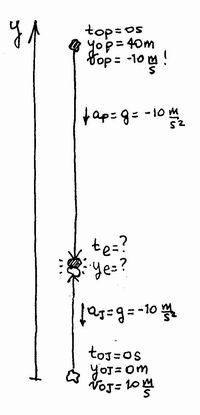

| home | | | más de cinemática | | | otros temas de Física | | | lecciones del maestro Ciruela | | | tonterías | | | @ |
|
|||||||||||||||


 |
Mirá este esquema. Está completo, prolijo y tiene todos los chiches, pero tiene un error que ahora es imposible saberlo. No es del todo representativo de lo que ocurre en el problema; pero nosotros no podemos saberlo a priori; pero no importa, un esquema bien hecho es útil de todos modos). Look at the signo que le puse a las velocidades iniciales, y súper ojímetro al signo de las aceleraciones de cada piedra... ¡las dos tienen el mismo! y = yo + vo ( t – to ) + ½ g ( t – to )² Reemplacemos en ellas las constantes iniciales (to , yo , vo y a) por las constantes iniciales de cada piedrita. Las ecuaciones quedan así: |
| Pedro | y = 40 m – 10 m/s . t . – 5 m/s² . t² | Estas son las ecuaciones que describen TODO el fenómeno del movimiento contado en el enunciado. |
||
| v = – 10 m/s – 10 m/s² . t | ||||
| Juan | y = 10 m/s . t . – 5 m/s² . t² | |||
| v = 10 m/s – 10 m/s² . t | ||||
Ahora usémoslas. Pidámosles que "hablen" del instante de encuentro... a las de velocidad no hace falta porque nada nos piden al respecto ni ofrecen información tampoco. Usemos sólo las de posición. Ellas dicen... |
||||
| ye = 40 m – 10 m/s . te . – 5 m/s² . te² | [1] | Estas, en cambio, son las ecuaciones especializadas para los instantes que a vos te interesan. | ||
| ye = 10 m/s . te . – 5 m/s² . te² | [2] | |||
| ¡Albricias! Un sistema de dos ecuaciones con dos incógnitas. Esto es una papa. (¿No leímos ya esto antes?). Te lo resuelvo (aunque no debería...). Igualo [1] y [2] | ||||
| 40 m – 10 m/s . te . – 5 m/s² . te2 = 10 m/s . te . – 5 m/s² . te² | ||||
| cancelo los términos cuadráticos (fijate que aparecen igualitos y en los dos miembros), después igualo a 0 y despejo te | ||||
| te = 2 s | ||||
| Con este valor voy a cualquiera de las ecuaciones [1] y [2]. No, mejor a las dos... | ||||
| ye = 0 m | ||||
¿Qué pasa? ¿Puede ser? Sí... se alcanzan justo en el piso. Ahora hacemos los gráficos, aprovechando la información que averiguamos recién y que cuando hicimos el esquema no podríamos haber anticipado. (Nos sirvió igual). |
||||
|
Te voy a plantear algunas preguntas que te van a ayudar a interpretar los gráficos y aprender a confeccionarlos con detalle y corrección. ¿Por qué las gráficas de velocidad de ambas piedras las hice paralelas? ¿Por qué tracé una recta de puntos que une el punto de intersección de la gráfica de velocidad verde con el vértice de la parábola de la gráfica de posición verde? ¿Qué te querrán mostrar esas dos rectas punteadas oblicuas que puse en el gráfico de posiciones? ¿Cuánto podrá valer el área que te sombreé en amarillo? |
|
||||
| DESAFIO: Hallar las velocidades del encuentro sin hacer demasiados cálculos, y haciendo sólo consideraciones geométricas sobre el gráfico de aceleración en función del tiempo. Rehacer todo el problemita pero suponiendo, ahora, que Juan arroja su piedra 1 segundo después que Pedro. |  |
|||||
|
||||||